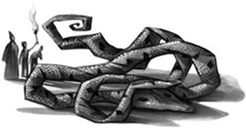

All those times we were in that bathroom, and she was just three toilets away,” said Ron bitterly at breakfast next day, “and we could’ve asked her, and now . . .”
It had been hard enough trying to look for spiders. Escaping their teachers long enough to sneak into a girls’ bathroom, the girls’ bathroom, moreover, right next to the scene of the first attack, was going to be almost impossible.
But something happened in their first lesson, Transfiguration, that drove the Chamber of Secrets out of their minds for the first time in weeks. Ten minutes into the class, Professor McGonagall told them that their exams would start on the first of June, one week from today.
“Exams?” howled Seamus Finnigan. “We’re still getting exams?”
There was a loud bang behind Harry as Neville Longbottom’s wand slipped, vanishing one of the legs on his desk. Professor McGonagall restored it with a wave of her own wand, and turned, frowning, to Seamus.
“The whole point of keeping the school open at this time is for you to receive your education,” she said sternly. “The exams will therefore take place as usual, and I trust you are all studying hard.”
Studying hard! It had never occurred to Harry that there would be exams with the castle in this state. There was a great deal of mutinous muttering around the room, which made Professor McGonagall scowl even more darkly.
“Professor Dumbledore’s instructions were to keep the school running as normally as possible,” she said. “And that, I need hardly point out, means finding out how much you have learned this year.”
Harry looked down at the pair of white rabbits he was supposed to be turning into slippers. What had he learned so far this year? He couldn’t seem to think of anything that would be useful in an exam.
Ron looked as though he’d just been told he had to go and live in the Forbidden Forest.
“Can you imagine me taking exams with this?” he asked Harry, holding up his wand, which had just started whistling loudly.
Three days before their first exam, Professor McGonagall made another announcement at breakfast.
“I have good news,” she said, and the Great Hall, instead of falling silent, erupted.
“Dumbledore’s coming back!” several people yelled joyfully.
“You’ve caught the Heir of Slytherin!” squealed a girl at the Ravenclaw table.
“Quidditch matches are back on!” roared Wood excitedly.
When the hubbub had subsided, Professor McGonagall said, “Professor Sprout has informed me that the Mandrakes are ready for cutting at last. Tonight, we will be able to revive those people who have been Petrified. I need hardly remind you all that one of them may well be able to tell us who, or what, attacked them. I am hopeful that this dreadful year will end with our catching the culprit.”
There was an explosion of cheering. Harry looked over at the Slytherin table and wasn’t at all surprised to see that Draco Malfoy hadn’t joined in. Ron, however, was looking happier than he’d looked in days.
“It won’t matter that we never asked Myrtle, then!” he said to Harry. “Hermione’ll probably have all the answers when they wake her up! Mind you, she’ll go crazy when she finds out we’ve got exams in three days’ time. She hasn’t studied. It might be kinder to leave her where she is till they’re over.”
Just then, Ginny Weasley came over and sat down next to Ron. She looked tense and nervous, and Harry noticed that her hands were twisting in her lap.
“What’s up?” said Ron, helping himself to more porridge.
Ginny didn’t say anything, but glanced up and down the Gryffindor table with a scared look on her face that reminded Harry of someone, though he couldn’t think who.
“Spit it out,” said Ron, watching her.
Harry suddenly realized who Ginny looked like. She was rocking backward and forward slightly in her chair, exactly like Dobby did when he was teetering on the edge of revealing forbidden information.
“I’ve got to tell you something,” Ginny mumbled, carefully not looking at Harry.
“What is it?” said Harry.
Ginny looked as though she couldn’t find the right words.
“What?” said Ron.
Ginny opened her mouth, but no sound came out. Harry leaned forward and spoke quietly, so that only Ginny and Ron could hear him.
“Is it something about the Chamber of Secrets? Have you seen something? Someone acting oddly?”
Ginny drew a deep breath and, at that precise moment, Percy Weasley appeared, looking tired and wan.
“If you’ve finished eating, I’ll take that seat, Ginny. I’m starving, I’ve only just come off patrol duty.”
Ginny jumped up as though her chair had just been electrified, gave Percy a fleeting, frightened look, and scampered away. Percy sat down and grabbed a mug from the center of the table.
“Percy!” said Ron angrily. “She was just about to tell us something important!”
Halfway through a gulp of tea, Percy choked.
“What sort of thing?” he said, coughing.
“I just asked her if she’d seen anything odd, and she started to say —”
“Oh — that — that’s nothing to do with the Chamber of Secrets,” said Percy at once.
“How do you know?” said Ron, his eyebrows raised.
“Well, er, if you must know, Ginny, er, walked in on me the other day when I was — well, never mind — the point is, she spotted me doing something and I, um, I asked her not to mention it to anybody. I must say, I did think she’d keep her word. It’s nothing, really, I’d just rather —”
Harry had never seen Percy look so uncomfortable.
“What were you doing, Percy?” said Ron, grinning. “Go on, tell us, we won’t laugh.”
Percy didn’t smile back.
“Pass me those rolls, Harry, I’m starving.”
Harry knew the whole mystery might be solved tomorrow without their help, but he wasn’t about to pass up a chance to speak to Myrtle if it turned up — and to his delight it did, midmorning, when they were being led to History of Magic by Gilderoy Lockhart.
Lockhart, who had so often assured them that all danger had passed, only to be proved wrong right away, was now wholeheartedly convinced that it was hardly worth the trouble to see them safely down the corridors. His hair wasn’t as sleek as usual; it seemed he had been up most of the night, patrolling the fourth floor.
“Mark my words,” he said, ushering them around a corner. “The first words out of those poor Petrified people’s mouths will be ‘It was Hagrid.’ Frankly, I’m astounded Professor McGonagall thinks all these security measures are necessary.”
“I agree, sir,” said Harry, making Ron drop his books in surprise.
“Thank you, Harry,” said Lockhart graciously while they waited for a long line of Hufflepuffs to pass. “I mean, we teachers have quite enough to be getting on with, without walking students to classes and standing guard all night. . . .”
“That’s right,” said Ron, catching on. “Why don’t you leave us here, sir, we’ve only got one more corridor to go —”
“You know, Weasley, I think I will,” said Lockhart. “I really should go and prepare my next class —”
And he hurried off.
“Prepare his class,” Ron sneered after him. “Gone to curl his hair, more like.”
They let the rest of the Gryffindors draw ahead of them, then darted down a side passage and hurried off toward Moaning Myrtle’s bathroom. But just as they were congratulating each other on their brilliant scheme —
“Potter! Weasley! What are you doing?”
It was Professor McGonagall, and her mouth was the thinnest of thin lines.
“We were — we were —” Ron stammered. “We were going to — to go and see —”
“Hermione,” said Harry. Ron and Professor McGonagall both looked at him.
“We haven’t seen her for ages, Professor,” Harry went on hurriedly, treading on Ron’s foot, “and we thought we’d sneak into the hospital wing, you know, and tell her the Mandrakes are nearly ready and, er, not to worry —”
Professor McGonagall was still staring at him, and for a moment, Harry thought she was going to explode, but when she spoke, it was in a strangely croaky voice.
“Of course,” she said, and Harry, amazed, saw a tear glistening in her beady eye. “Of course, I realize this has all been hardest on the friends of those who have been . . . I quite understand. Yes, Potter, of course you may visit Miss Granger. I will inform Professor Binns where you’ve gone. Tell Madam Pomfrey I have given my permission.”
Harry and Ron walked away, hardly daring to believe that they’d avoided detention. As they turned the corner, they distinctly heard Professor McGonagall blow her nose.
“That,” said Ron fervently, “was the best story you’ve ever come up with.”
They had no choice now but to go to the hospital wing and tell Madam Pomfrey that they had Professor McGonagall’s permission to visit Hermione.
Madam Pomfrey let them in, but reluctantly.
“There’s just no point talking to a Petrified person,” she said, and they had to admit she had a point when they’d taken their seats next to Hermione. It was plain that Hermione didn’t have the faintest inkling that she had visitors, and that they might just as well tell her bedside cabinet not to worry for all the good it would do.
“Wonder if she did see the attacker, though?” said Ron, looking sadly at Hermione’s rigid face. “Because if he sneaked up on them all, no one’ll ever know. . . .”
But Harry wasn’t looking at Hermione’s face. He was more interested in her right hand. It lay clenched on top of her blankets, and bending closer, he saw that a piece of paper was scrunched inside her fist.
Making sure that Madam Pomfrey was nowhere near, he pointed this out to Ron.
“Try and get it out,” Ron whispered, shifting his chair so that he blocked Harry from Madam Pomfrey’s view.
It was no easy task. Hermione’s hand was clamped so tightly around the paper that Harry was sure he was going to tear it. While Ron kept watch he tugged and twisted, and at last, after several tense minutes, the paper came free.
It was a page torn from a very old library book. Harry smoothed it out eagerly and Ron leaned close to read it, too.
And beneath this, a single word had been written, in a hand Harry recognized as Hermione’s. Pipes.
It was as though somebody had just flicked a light on in his brain.
“Ron,” he breathed. “This is it. This is the answer. The monster in the Chamber’s a basilisk — a giant serpent! That’s why I’ve been hearing that voice all over the place, and nobody else has heard it. It’s because I understand Parseltongue. . . .”
Harry looked up at the beds around him.
“The basilisk kills people by looking at them. But no one’s died — because no one looked it straight in the eye. Colin saw it through his camera. The basilisk burned up all the film inside it, but Colin just got Petrified. Justin . . . Justin must’ve seen the basilisk through Nearly Headless Nick! Nick got the full blast of it, but he couldn’t die again . . . and Hermione and that Ravenclaw prefect were found with a mirror next to them. Hermione had just realized the monster was a basilisk. I bet you anything she warned the first person she met to look around corners with a mirror first! And that girl pulled out her mirror — and —”
Ron’s jaw had dropped.
“And Mrs. Norris?” he whispered eagerly.
Harry thought hard, picturing the scene on the night of Halloween.
“The water . . .” he said slowly. “The flood from Moaning Myrtle’s bathroom. I bet you Mrs. Norris only saw the reflection. . . .”
He scanned the page in his hand eagerly. The more he looked at it, the more it made sense.
“‘The Basilisk flees only from the crowing of the rooster, which is fatal to it’!” he read aloud. “Hagrid’s roosters were killed! The Heir of Slytherin didn’t want one anywhere near the castle once the Chamber was opened! ‘Spiders flee before the Basilisk’! It all fits!”
“But how’s the basilisk been getting around the place?” said Ron. “A giant snake . . . Someone would’ve seen . . .”
Harry, however, pointed at the word Hermione had scribbled at the foot of the page.
“Pipes,” he said. “Pipes . . . Ron, it’s been using the plumbing. I’ve been hearing that voice inside the walls. . . .”
Ron suddenly grabbed Harry’s arm.
“The entrance to the Chamber of Secrets!” he said hoarsely. “What if it’s a bathroom? What if it’s in —”
“— Moaning Myrtle’s bathroom,” said Harry.
They sat there, excitement coursing through them, hardly able to believe it.
“This means,” said Harry, “I can’t be the only Parselmouth in the school. The Heir of Slytherin’s one, too. That’s how he’s been controlling the basilisk.”
“What’re we going to do?” said Ron, whose eyes were flashing. “Should we go straight to McGonagall?”
“Let’s go to the staffroom,” said Harry, jumping up. “She’ll be there in ten minutes. It’s nearly break.”
They ran downstairs. Not wanting to be discovered hanging around in another corridor, they went straight into the deserted staffroom. It was a large, paneled room full of dark, wooden chairs. Harry and Ron paced around it, too excited to sit down.
But the bell to signal break never came.
Instead, echoing through the corridors came Professor McGonagall’s voice, magically magnified.
“All students to return to their House dormitories at once. All teachers return to the staffroom. Immediately, please.”
Harry wheeled around to stare at Ron.
“Not another attack? Not now?”
“What’ll we do?” said Ron, aghast. “Go back to the dormitory?”
“No,” said Harry, glancing around. There was an ugly sort of wardrobe to his left, full of the teachers’ cloaks. “In here. Let’s hear what it’s all about. Then we can tell them what we’ve found out.”
They hid themselves inside it, listening to the rumbling of hundreds of people moving overhead, and the staffroom door banging open. From between the musty folds of the cloaks, they watched the teachers filtering into the room. Some of them were looking puzzled, others downright scared. Then Professor McGonagall arrived.
“It has happened,” she told the silent staffroom. “A student has been taken by the monster. Right into the Chamber itself.”
Professor Flitwick let out a squeal. Professor Sprout clapped her hands over her mouth. Snape gripped the back of a chair very hard and said, “How can you be sure?”
“The Heir of Slytherin,” said Professor McGonagall, who was very white, “left another message. Right underneath the first one. ‘Her skeleton will lie in the Chamber forever.’”
Professor Flitwick burst into tears.
“Who is it?” said Madam Hooch, who had sunk, weak-kneed, into a chair. “Which student?”
“Ginny Weasley,” said Professor McGonagall.
Harry felt Ron slide silently down onto the wardrobe floor beside him.
“We shall have to send all the students home tomorrow,” said Professor McGonagall. “This is the end of Hogwarts. Dumbledore always said . . .”
The staffroom door banged open again. For one wild moment, Harry was sure it would be Dumbledore. But it was Lockhart, and he was beaming.
“So sorry — dozed off — what have I missed?”
He didn’t seem to notice that the other teachers were looking at him with something remarkably like hatred. Snape stepped forward.
“Just the man,” he said. “The very man. A girl has been snatched by the monster, Lockhart. Taken into the Chamber of Secrets itself. Your moment has come at last.”
Lockhart blanched.
“That’s right, Gilderoy,” chipped in Professor Sprout. “Weren’t you saying just last night that you’ve known all along where the entrance to the Chamber of Secrets is?”
“I — well, I —” sputtered Lockhart.
“Yes, didn’t you tell me you were sure you knew what was inside it?” piped up Professor Flitwick.
“D-did I? I don’t recall —”
“I certainly remember you saying you were sorry you hadn’t had a crack at the monster before Hagrid was arrested,” said Snape. “Didn’t you say that the whole affair had been bungled, and that you should have been given a free rein from the first?”
Lockhart stared around at his stony-faced colleagues.
“I — I really never — you may have misunderstood —”
“We’ll leave it to you, then, Gilderoy,” said Professor McGonagall. “Tonight will be an excellent time to do it. We’ll make sure everyone’s out of your way. You’ll be able to tackle the monster all by youself. A free rein at last.”
Lockhart gazed desperately around him, but nobody came to the rescue. He didn’t look remotely handsome anymore. His lip was trembling, and in the absence of his usually toothy grin, he looked weak-chinned and feeble.
“V-very well,” he said. “I’ll — I’ll be in my office, getting — getting ready.”
And he left the room.
“Right,” said Professor McGonagall, whose nostrils were flared, “that’s got him out from under our feet. The Heads of Houses should go and inform their students what has happened. Tell them the Hogwarts Express will take them home first thing tomorrow. Will the rest of you please make sure no students have been left outside their dormitories.”
The teachers rose and left, one by one.
It was probably the worst day of Harry’s entire life. He, Ron, Fred, and George sat together in a corner of the Gryffindor common room, unable to say anything to each other. Percy wasn’t there. He had gone to send an owl to Mr. and Mrs. Weasley, then shut himself up in his dormitory.
No afternoon ever lasted as long as that one, nor had Gryffindor Tower ever been so crowded, yet so quiet. Near sunset, Fred and George went up to bed, unable to sit there any longer.
“She knew something, Harry,” said Ron, speaking for the first time since they had entered the wardrobe in the staffroom. “That’s why she was taken. It wasn’t some stupid thing about Percy at all. She’d found out something about the Chamber of Secrets. That must be why she was —” Ron rubbed his eyes frantically. “I mean, she was a pureblood. There can’t be any other reason.”
Harry could see the sun sinking, blood-red, below the skyline. This was the worst he had ever felt. If only there was something they could do. Anything.
“Harry,” said Ron. “D’you think there’s any chance at all she’s not — you know —”
Harry didn’t know what to say. He couldn’t see how Ginny could still be alive.
“D’you know what?” said Ron. “I think we should go and see Lockhart. Tell him what we know. He’s going to try and get into the Chamber. We can tell him where we think it is, and tell him it’s a basilisk in there.”
Because Harry couldn’t think of anything else to do, and because he wanted to be doing something, he agreed. The Gryffindors around them were so miserable, and felt so sorry for the Weasleys, that nobody tried to stop them as they got up, crossed the room, and left through the portrait hole.
Darkness was falling as they walked down to Lockhart’s office. There seemed to be a lot of activity going on inside it. They could hear scraping, thumps, and hurried footsteps.
Harry knocked and there was a sudden silence from inside. Then the door opened the tiniest crack and they saw one of Lockhart’s eyes peering through it.
“Oh — Mr. Potter — Mr. Weasley —” he said, opening the door a bit wider. “I’m rather busy at the moment — if you would be quick —”
“Professor, we’ve got some information for you,” said Harry. “We think it’ll help you.”
“Er — well — it’s not terribly —” The side of Lockhart’s face that they could see looked very uncomfortable. “I mean — well — all right —”
He opened the door and they entered.
His office had been almost completely stripped. Two large trunks stood open on the floor. Robes, jade-green, lilac, midnight-blue, had been hastily folded into one of them; books were jumbled untidily into the other. The photographs that had covered the walls were now crammed into boxes on the desk.
“Are you going somewhere?” said Harry.
“Er, well, yes,” said Lockhart, ripping a life-size poster of himself from the back of the door as he spoke and starting to roll it up. “Urgent call — unavoidable — got to go —”
“What about my sister?” said Ron jerkily.
“Well, as to that — most unfortunate —” said Lockhart, avoiding their eyes as he wrenched open a drawer and started emptying the contents into a bag. “No one regrets more than I —”
“You’re the Defense Against the Dark Arts teacher!” said Harry. “You can’t go now! Not with all the Dark stuff going on here!”
“Well — I must say — when I took the job —” Lockhart muttered, now piling socks on top of his robes. “nothing in the job description — didn’t expect —”
“You mean you’re running away?” said Harry disbelievingly. “After all that stuff you did in your books —”
“Books can be misleading,” said Lockhart delicately.
“You wrote them!” Harry shouted.
“My dear boy,” said Lockhart, straightening up and frowning at Harry. “Do use your common sense. My books wouldn’t have sold half as well if people didn’t think I’d done all those things. No one wants to read about some ugly old Armenian warlock, even if he did save a village from werewolves. He’d look dreadful on the front cover. No dress sense at all. And the witch who banished the Bandon Banshee had a hairy chin. I mean, come on —”
“So you’ve just been taking credit for what a load of other people have done?” said Harry incredulously.
“Harry, Harry,” said Lockhart, shaking his head impatiently, “it’s not nearly as simple as that. There was work involved. I had to track these people down. Ask them exactly how they managed to do what they did. Then I had to put a Memory Charm on them so they wouldn’t remember doing it. If there’s one thing I pride myself on, it’s my Memory Charms. No, it’s been a lot of work, Harry. It’s not all book signings and publicity photos, you know. You want fame, you have to be prepared for a long hard slog.”
He banged the lids of his trunks shut and locked them.
“Let’s see,” he said. “I think that’s everything. Yes. Only one thing left.”
He pulled out his wand and turned to them.
“Awfully sorry, boys, but I’ll have to put a Memory Charm on you now. Can’t have you blabbing my secrets all over the place. I’d never sell another book —”
Harry reached his wand just in time. Lockhart had barely raised his, when Harry bellowed, “Expelliarmus!”
Lockhart was blasted backward, falling over his trunk; his wand flew high into the air; Ron caught it, and flung it out of the open window.
“Shouldn’t have let Professor Snape teach us that one,” said Harry furiously, kicking Lockhart’s trunk aside. Lockhart was looking up at him, feeble once more. Harry was still pointing his wand at him.
“What d’you want me to do?” said Lockhart weakly. “I don’t know where the Chamber of Secrets is. There’s nothing I can do.”
“You’re in luck,” said Harry, forcing Lockhart to his feet at wandpoint. “We think we know where it is. And what’s inside it. Let’s go.”
They marched Lockhart out of his office and down the nearest stairs, along the dark corridor where the messages shone on the wall, to the door of Moaning Myrtle’s bathroom.
They sent Lockhart in first. Harry was pleased to see that he was shaking.
Moaning Myrtle was sitting on the tank of the end toilet.
“Oh, it’s you,” she said when she saw Harry. “What do you want this time?”
“To ask you how you died,” said Harry.
Myrtle’s whole aspect changed at once. She looked as though she had never been asked such a flattering question.
“Ooooh, it was dreadful,” she said with relish. “It happened right in here. I died in this very stall. I remember it so well. I’d hidden because Olive Hornby was teasing me about my glasses. The door was locked, and I was crying, and then I heard somebody come in. They said something funny. A different language, I think it must have been. Anyway, what really got me was that it was a boy speaking. So I unlocked the door, to tell him to go and use his own toilet, and then —” Myrtle swelled importantly, her face shining. “I died.”
“How?” said Harry.
“No idea,” said Myrtle in hushed tones. “I just remember seeing a pair of great, big, yellow eyes. My whole body sort of seized up, and then I was floating away. . . .” She looked dreamily at Harry. “And then I came back again. I was determined to haunt Olive Hornby, you see. Oh, she was sorry she’d ever laughed at my glasses.”
“Where exactly did you see the eyes?” said Harry.
“Somewhere there,” said Myrtle, pointing vaguely toward the sink in front of her toilet.
Harry and Ron hurried over to it. Lockhart was standing well back, a look of utter terror on his face.
It looked like an ordinary sink. They examined every inch of it, inside and out, including the pipes below. And then Harry saw it: Scratched on the side of one of the copper taps was a tiny snake.
“That tap’s never worked,” said Myrtle brightly as he tried to turn it.
“Harry,” said Ron. “Say something. Something in Parseltongue.”
“But —” Harry thought hard. The only times he’d ever managed to speak Parseltongue were when he’d been faced with a real snake. He stared hard at the tiny engraving, trying to imagine it was real.
“Open up,” he said.
He looked at Ron, who shook his head.
“English,” he said.
Harry looked back at the snake, willing himself to believe it was alive. If he moved his head, the candlelight made it look as though it were moving.
“Open up,” he said.
Except that the words weren’t what he heard; a strange hissing had escaped him, and at once the tap glowed with a brilliant white light and began to spin. Next second, the sink began to move; the sink, in fact, sank, right out of sight, leaving a large pipe exposed, a pipe wide enough for a man to slide into.
Harry heard Ron gasp and looked up again. He had made up his mind what he was going to do.
“I’m going down there,” he said.
He couldn’t not go, not now they had found the entrance to the Chamber, not if there was even the faintest, slimmest, wildest chance that Ginny might be alive.
“Me too,” said Ron.
There was a pause.
“Well, you hardly seem to need me,” said Lockhart, with a shadow of his old smile. “I’ll just —”
He put his hand on the door knob, but Ron and Harry both pointed their wands at him.
“You can go first,” Ron snarled.
White-faced and wandless, Lockhart approached the opening.
“Boys,” he said, his voice feeble. “Boys, what good will it do?”
Harry jabbed him in the back with his wand. Lockhart slid his legs into the pipe.
“I really don’t think —” he started to say, but Ron gave him a push, and he slid out of sight. Harry followed quickly. He lowered himself slowly into the pipe, then let go.
It was like rushing down an endless, slimy, dark slide. He could see more pipes branching off in all directions, but none as large as theirs, which twisted and turned, sloping steeply downward, and he knew that he was falling deeper below the school than even the dungeons. Behind him he could hear Ron, thudding slightly at the curves.
And then, just as he had begun to worry about what would happen when he hit the ground, the pipe leveled out, and he shot out of the end with a wet thud, landing on the damp floor of a dark stone tunnel large enough to stand in. Lockhart was getting to his feet a little ways away, covered in slime and white as a ghost. Harry stood aside as Ron came whizzing out of the pipe, too.
“We must be miles under the school,” said Harry, his voice echoing in the black tunnel.
“Under the lake, probably,” said Ron, squinting around at the dark, slimy walls.
All three of them turned to stare into the darkness ahead.
“Lumos!” Harry muttered to his wand and it lit again. “C’mon,” he said to Ron and Lockhart, and off they went, their footsteps slapping loudly on the wet floor.
The tunnel was so dark that they could only see a little distance ahead. Their shadows on the wet walls looked monstrous in the wandlight.
“Remember,” Harry said quietly as they walked cautiously forward, “any sign of movement, close your eyes right away. . . .”
But the tunnel was quiet as the grave, and the first unexpected sound they heard was a loud crunch as Ron stepped on what turned out to be a rat’s skull. Harry lowered his wand to look at the floor and saw that it was littered with small animal bones. Trying very hard not to imagine what Ginny might look like if they found her, Harry led the way forward, around a dark bend in the tunnel.
“Harry — there’s something up there —” said Ron hoarsely, grabbing Harry’s shoulder.
They froze, watching. Harry could just see the outline of something huge and curved, lying right across the tunnel. It wasn’t moving.
“Maybe it’s asleep,” he breathed, glancing back at the other two. Lockhart’s hands were pressed over his eyes. Harry turned back to look at the thing, his heart beating so fast it hurt.
Very slowly, his eyes as narrow as he could make them and still see, Harry edged forward, his wand held high.
The light slid over a gigantic snake skin, of a vivid, poisonous green, lying curled and empty across the tunnel floor. The creature that had shed it must have been twenty feet long at least.
“Blimey,” said Ron weakly.
There was a sudden movement behind them. Gilderoy Lockhart’s knees had given way.
“Get up,” said Ron sharply, pointing his wand at Lockhart.
Lockhart got to his feet — then he dived at Ron, knocking him to the ground.
Harry jumped forward, but too late — Lockhart was straightening up, panting, Ron’s wand in his hand and a gleaming smile back on his face.
“The adventure ends here, boys!” he said. “I shall take a bit of this skin back up to the school, tell them I was too late to save the girl, and that you two tragically lost your minds at the sight of her mangled body — say good-bye to your memories!”
He raised Ron’s Spellotaped wand high over his head and yelled, “Obliviate!”
The wand exploded with the force of a small bomb. Harry flung his arms over his head and ran, slipping over the coils of snake skin, out of the way of great chunks of tunnel ceiling that were thundering to the floor. Next moment, he was standing alone, gazing at a solid wall of broken rock.
“Ron!” he shouted. “Are you okay? Ron!”
“I’m here!” came Ron’s muffled voice from behind the rockfall. “I’m okay — this git’s not, though — he got blasted by the wand —”
There was a dull thud and a loud “ow!” It sounded as though Ron had just kicked Lockhart in the shins.
“What now?” Ron’s voice said, sounding desperate. “We can’t get through — it’ll take ages. . . .”
Harry looked up at the tunnel ceiling. Huge cracks had appeared in it. He had never tried to break apart anything as large as these rocks by magic, and now didn’t seem a good moment to try — what if the whole tunnel caved in?
There was another thud and another “ow!” from behind the rocks. They were wasting time. Ginny had already been in the Chamber of Secrets for hours. . . . Harry knew there was only one thing to do.
“Wait there,” he called to Ron. “Wait with Lockhart. I’ll go on. . . . If I’m not back in an hour . . .”
There was a very pregnant pause.
“I’ll try and shift some of this rock,” said Ron, who seemed to be trying to keep his voice steady. “So you can — can get back through. And, Harry —”
“See you in a bit,” said Harry, trying to inject some confidence into his shaking voice.
And he set off alone past the giant snake skin.
Soon the distant noise of Ron straining to shift the rocks was gone. The tunnel turned and turned again. Every nerve in Harry’s body was tingling unpleasantly. He wanted the tunnel to end, yet dreaded what he’d find when it did. And then, at last, as he crept around yet another bend, he saw a solid wall ahead on which two entwined serpents were carved, their eyes set with great, glinting emeralds.
Harry approached, his throat very dry. There was no need to pretend these stone snakes were real; their eyes looked strangely alive.
He could guess what he had to do. He cleared his throat, and the emerald eyes seemed to flicker.
“Open,” said Harry, in a low, faint hiss.
The serpents parted as the wall cracked open, the halves slid smoothly out of sight, and Harry, shaking from head to foot, walked inside.